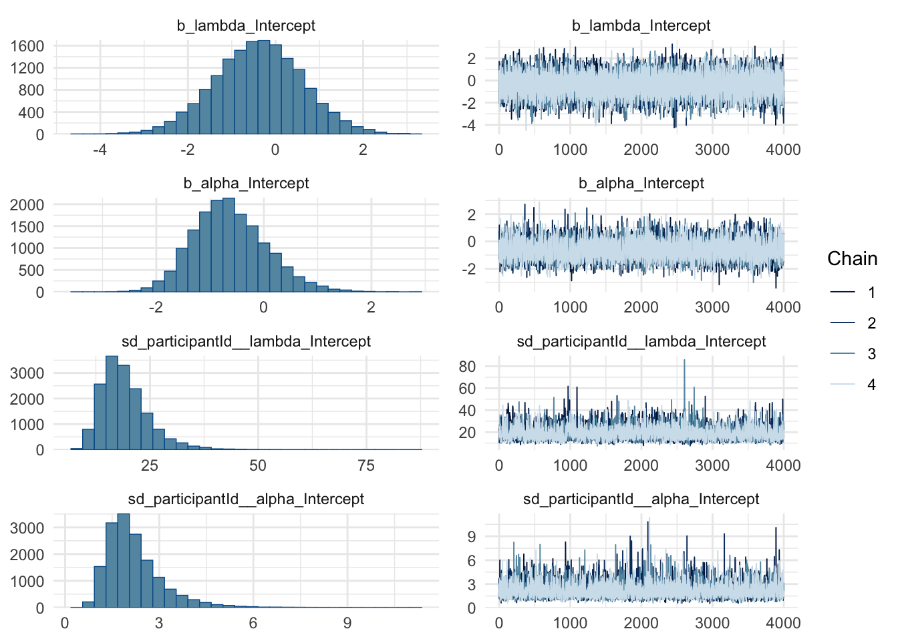
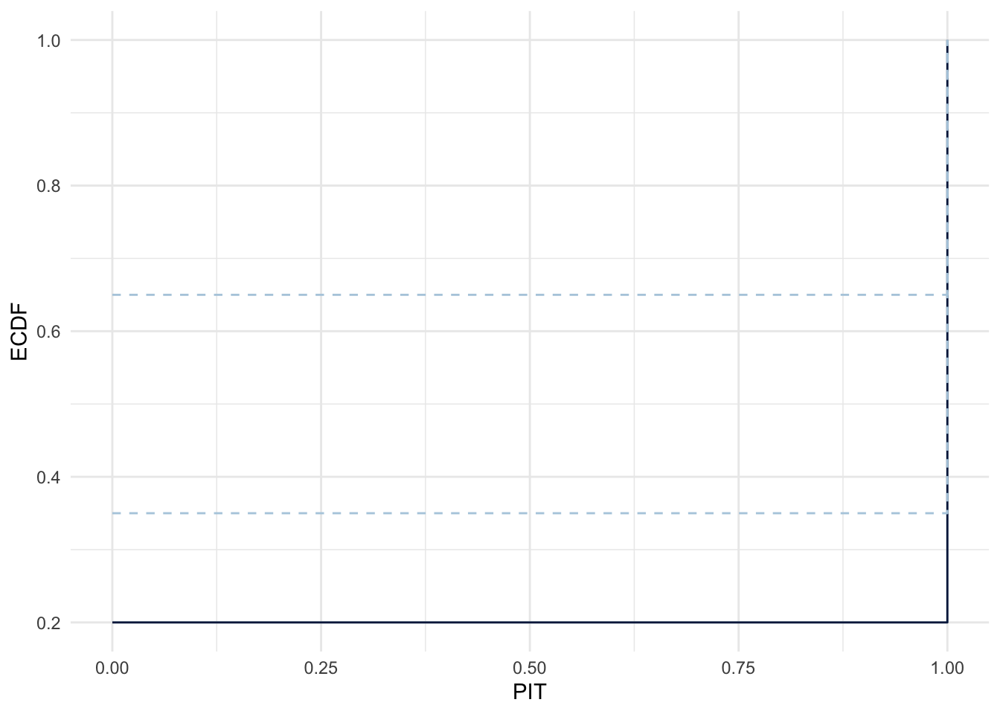
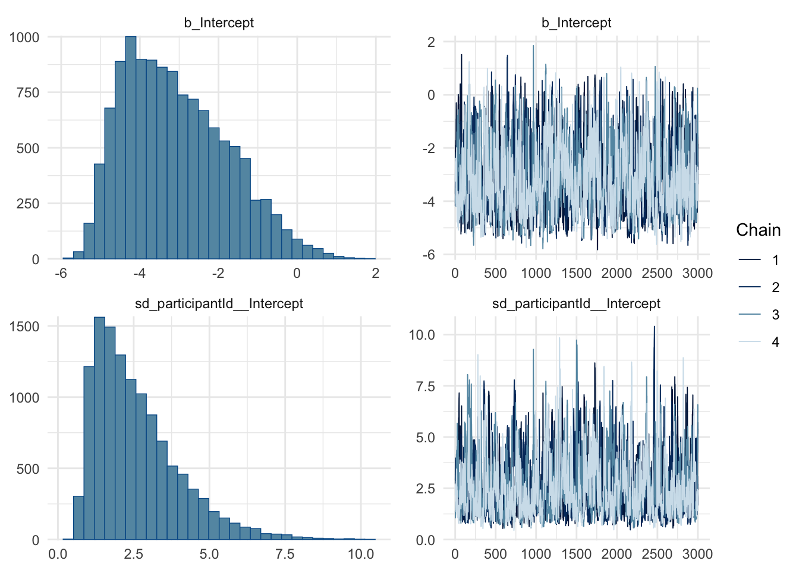
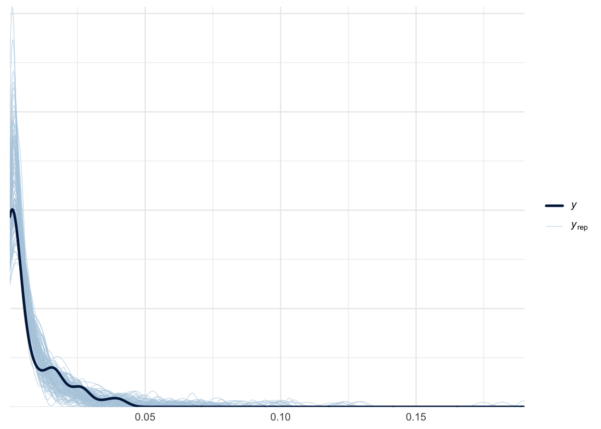
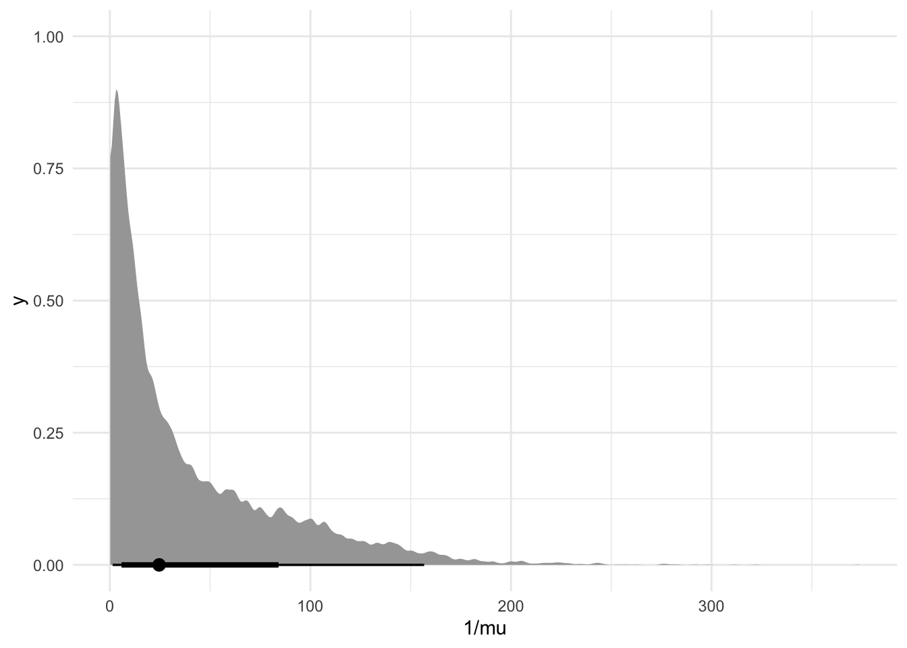
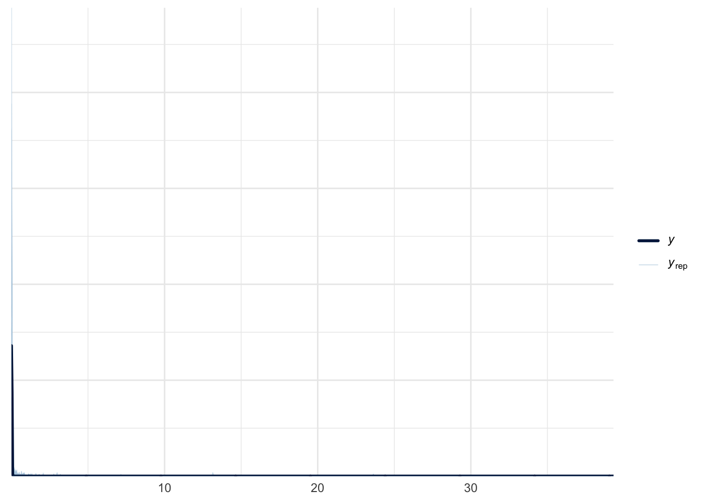
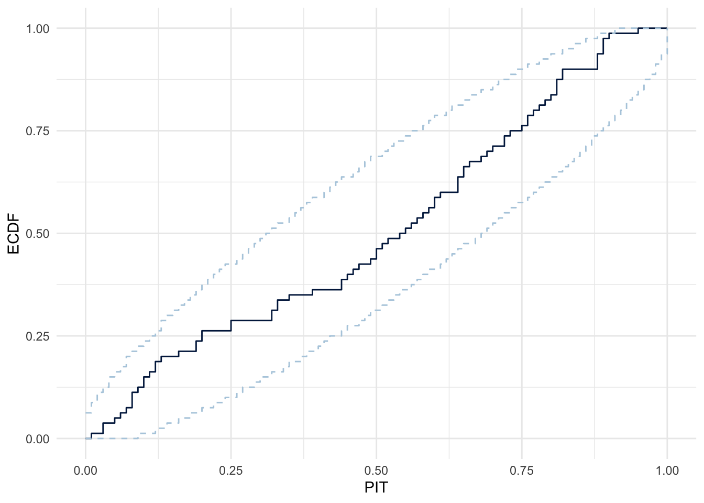
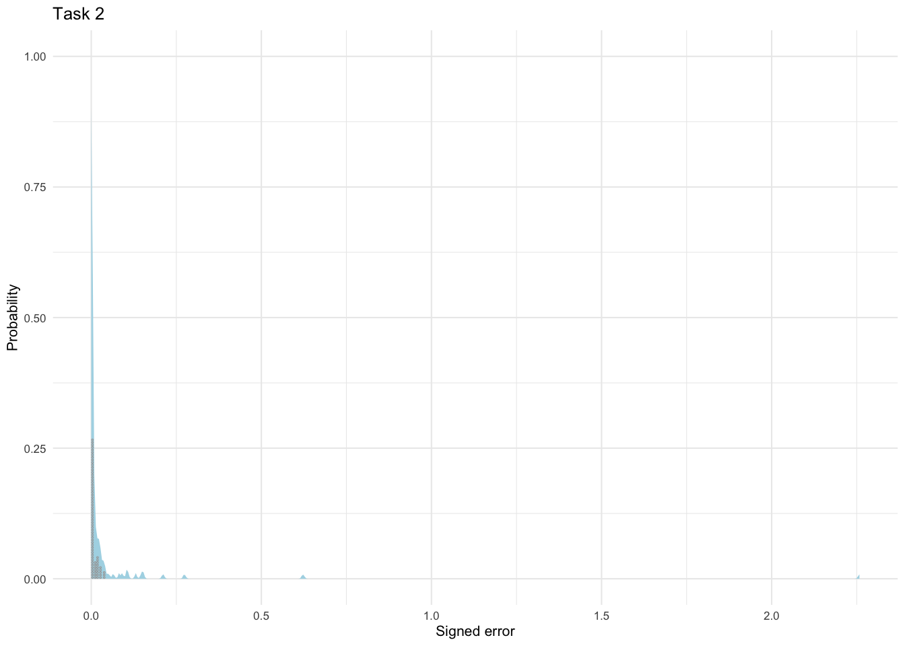
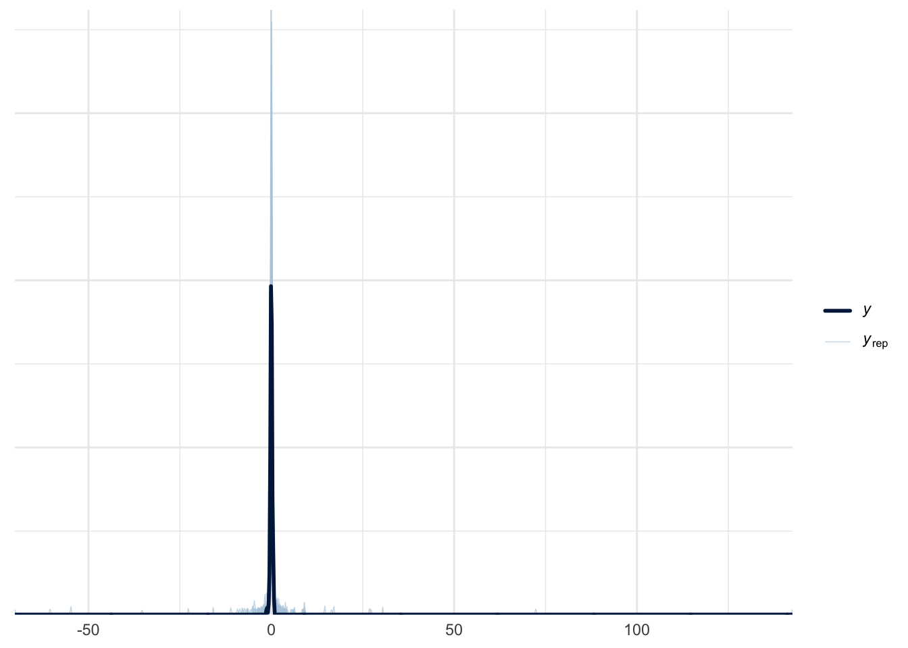

# Define the Lomax familylomax_family <-custom_family("lomax",dpars =c("mu", "lambda", "alpha"), # parameters: lambda = scale, alpha = shapelinks =c("identity", "log", "log"), # log links ensure parameters are positivelb =c(-Inf, 0, 0), # lower bounds for both parameterstype ="real")# The Stan code for the Pareto log-likelihood function# Note: Stan already has a built-in pareto_lpdf functionstan_funs <-" // Use the built-in pareto_type_2_lpdf function real lomax_lpdf(real y, real mu, real lambda, real alpha) { return pareto_type_2_lpdf(y | 0, lambda, alpha); } real lomax_rng(real mu, real lambda, real alpha) { return pareto_type_2_rng(0, lambda, alpha); }"
f <-bf(error.y ~0, mu ~0, lambda ~ (1| participantId), alpha ~ (1| participantId), family = lomax_family)p <-c(prior(normal(0, 1), class = Intercept, dpar = alpha), prior(cauchy(0, 1), class = sd, group = participantId, dpar = alpha, lb =0), prior(normal(0, 1), class = Intercept, dpar = lambda),prior(cauchy(0, 1), class = sd, group = participantId, dpar = lambda, lb =0))
Family: lomax
Links: mu = identity; lambda = log; alpha = log
Formula: error.y ~ 0
mu ~ 0
lambda ~ (1 | participantId)
alpha ~ (1 | participantId)
Data: . (Number of observations: 80)
Draws: 4 chains, each with iter = 8000; warmup = 4000; thin = 1;
total post-warmup draws = 16000
Multilevel Hyperparameters:
~participantId (Number of levels: 8)
Estimate Est.Error l-95% CI u-95% CI Rhat Bulk_ESS
sd(lambda_Intercept) 19.19 5.59 11.27 32.67 1.00 3519
sd(alpha_Intercept) 2.19 0.89 1.03 4.47 1.00 4938
Tail_ESS
sd(lambda_Intercept) 6431
sd(alpha_Intercept) 7149
Regression Coefficients:
Estimate Est.Error l-95% CI u-95% CI Rhat Bulk_ESS Tail_ESS
lambda_Intercept -0.39 1.00 -2.37 1.56 1.00 13173 11359
alpha_Intercept -0.63 0.68 -1.85 0.84 1.00 6054 8957
Draws were sampled using sampling(NUTS). For each parameter, Bulk_ESS
and Tail_ESS are effective sample size measures, and Rhat is the potential
scale reduction factor on split chains (at convergence, Rhat = 1).
plot(model.y.lomax)

expose_functions(model.y.lomax, vectorize =TRUE)
Trying to compile a simple C file
Running /Library/Frameworks/R.framework/Resources/bin/R CMD SHLIB foo.c
using C compiler: ‘Apple clang version 17.0.0 (clang-1700.0.13.3)’
using SDK: ‘’
clang -arch arm64 -I"/Library/Frameworks/R.framework/Resources/include" -DNDEBUG -I"/Library/Frameworks/R.framework/Versions/4.4-arm64/Resources/library/Rcpp/include/" -I"/Library/Frameworks/R.framework/Versions/4.4-arm64/Resources/library/RcppEigen/include/" -I"/Library/Frameworks/R.framework/Versions/4.4-arm64/Resources/library/RcppEigen/include/unsupported" -I"/Library/Frameworks/R.framework/Versions/4.4-arm64/Resources/library/BH/include" -I"/Library/Frameworks/R.framework/Versions/4.4-arm64/Resources/library/StanHeaders/include/src/" -I"/Library/Frameworks/R.framework/Versions/4.4-arm64/Resources/library/StanHeaders/include/" -I"/Library/Frameworks/R.framework/Versions/4.4-arm64/Resources/library/RcppParallel/include/" -I"/Library/Frameworks/R.framework/Versions/4.4-arm64/Resources/library/rstan/include" -DEIGEN_NO_DEBUG -DBOOST_DISABLE_ASSERTS -DBOOST_PENDING_INTEGER_LOG2_HPP -DSTAN_THREADS -DUSE_STANC3 -DSTRICT_R_HEADERS -DBOOST_PHOENIX_NO_VARIADIC_EXPRESSION -D_HAS_AUTO_PTR_ETC=0 -include '/Library/Frameworks/R.framework/Versions/4.4-arm64/Resources/library/StanHeaders/include/stan/math/prim/fun/Eigen.hpp' -D_REENTRANT -DRCPP_PARALLEL_USE_TBB=1 -I/opt/R/arm64/include -fPIC -falign-functions=64 -Wall -g -O2 -c foo.c -o foo.o
In file included from <built-in>:1:
In file included from /Library/Frameworks/R.framework/Versions/4.4-arm64/Resources/library/StanHeaders/include/stan/math/prim/fun/Eigen.hpp:22:
In file included from /Library/Frameworks/R.framework/Versions/4.4-arm64/Resources/library/RcppEigen/include/Eigen/Dense:1:
In file included from /Library/Frameworks/R.framework/Versions/4.4-arm64/Resources/library/RcppEigen/include/Eigen/Core:19:
/Library/Frameworks/R.framework/Versions/4.4-arm64/Resources/library/RcppEigen/include/Eigen/src/Core/util/Macros.h:679:10: fatal error: 'cmath' file not found
679 | #include <cmath>
| ^~~~~~~
1 error generated.
make: *** [foo.o] Error 1
# Define the posterior_predict function in R as per vignetteposterior_predict_lomax <-function(i, draws, ...) { lambda <- draws$dpars$lambda[i] alpha <- draws$dpars$alpha[i]lomax_rng(0, lambda, alpha)}pp_check(model.y.lomax, ndraws =100)
pp_check(model.y.lomax, ndraws =100, type ="pit_ecdf")

Hmm from the ecdf we know it’s not in the desired region ..
f <-bf(error.y ~0, mu ~ (1| participantId), # technically this is lambda but we call it mu nonetheless family = exponential)# mu has log-link, so we don't pose any bounds on it p <-c(prior(normal(0, 1), class = Intercept), prior(cauchy(0, 1), class = sd, group = participantId, lb =0))
Family: exponential
Links: mu = log
Formula: error.y ~ 0
mu ~ (1 | participantId)
Data: . (Number of observations: 80)
Draws: 4 chains, each with iter = 6000; warmup = 3000; thin = 1;
total post-warmup draws = 12000
Multilevel Hyperparameters:
~participantId (Number of levels: 8)
Estimate Est.Error l-95% CI u-95% CI Rhat Bulk_ESS Tail_ESS
sd(Intercept) 2.59 1.40 0.86 6.12 1.00 692 1546
Regression Coefficients:
Estimate Est.Error l-95% CI u-95% CI Rhat Bulk_ESS Tail_ESS
Intercept -3.08 1.32 -5.08 -0.25 1.00 801 2085
Draws were sampled using sampling(NUTS). For each parameter, Bulk_ESS
and Tail_ESS are effective sample size measures, and Rhat is the potential
scale reduction factor on split chains (at convergence, Rhat = 1).
plot(model.y.exponential)

pp_check(model.y.exponential, ndraws =100)

pp_check(model.y.exponential, ndraws =100, type ="pit_ecdf")
task2_df %>% modelr::data_grid(error.y =0) %>%add_predicted_draws(model.y.exponential, ndraws =100, re_formula =NA) %>%ggplot() +stat_slab(aes(x = .prediction), fill ="lightblue", alpha =1) +geom_dots(data = task2_df, aes(x = va.ans.y - va.select.y)) +labs(y ="Probability", x ="Signed error", title ="Task 2") +theme_minimal(base_size =8) -> p p

Weibull
f <-bf( error.y ~0, mu ~ (1| participantId), # log link shape ~ (1| participantId), # log link family =weibull())p <-c(prior(normal(0, 1), class = Intercept),prior(normal(0, 1), class = sd, group = participantId, lb =0),prior(normal(0, 1), class = Intercept, dpar = shape), prior(normal(0, 1), class = sd, group = participantId, dpar = shape, lb =0) )
Fit the model:
model.y.weibull <- task2_df %>%mutate(error.y = va.ans.y - va.select.y) %>%mutate(error.y =ifelse(error.y < tolerance, tolerance, error.y)) %>%# brms needs value to be > 0 brm(formula = f, data = ., prior = p, chains =4, file ="models/task2.y.weibull", file_refit ="on_change",save_pars =save_pars(all =TRUE), control =list(adapt_delta =0.99, max_treedepth =15), iter =4000 )
Check fit and posterior:
summary(model.y.weibull)
Family: weibull
Links: mu = log; shape = log
Formula: error.y ~ 0
mu ~ (1 | participantId)
shape ~ (1 | participantId)
Data: . (Number of observations: 80)
Draws: 4 chains, each with iter = 4000; warmup = 2000; thin = 1;
total post-warmup draws = 8000
Multilevel Hyperparameters:
~participantId (Number of levels: 8)
Estimate Est.Error l-95% CI u-95% CI Rhat Bulk_ESS Tail_ESS
sd(Intercept) 0.78 0.61 0.02 2.20 1.00 2018 3241
sd(shape_Intercept) 0.58 0.21 0.26 1.09 1.00 2413 3809
Regression Coefficients:
Estimate Est.Error l-95% CI u-95% CI Rhat Bulk_ESS Tail_ESS
Intercept -3.64 0.66 -4.58 -2.04 1.00 3045 4245
shape_Intercept -0.93 0.24 -1.38 -0.43 1.00 2475 3512
Draws were sampled using sampling(NUTS). For each parameter, Bulk_ESS
and Tail_ESS are effective sample size measures, and Rhat is the potential
scale reduction factor on split chains (at convergence, Rhat = 1).
plot(model.y.weibull)
pp_check(model.y.weibull, ndraws =100)

pp_check(model.y.weibull, ndraws =100, type ="pit_ecdf")

Overlay plot:
task2_df %>% modelr::data_grid(error.y =0) %>%add_predicted_draws(model.y.weibull, ndraws =100, re_formula =NA) %>%ggplot() +stat_slab(aes(x = .prediction), fill ="lightblue", alpha =1) +geom_dots(data = task2_df, aes(x = va.ans.y - va.select.y)) +labs(y ="Probability", x ="Signed error", title ="Task 2") +theme_minimal(base_size =8) -> p p

Log-Normal
f <-bf(error.y ~0, mu ~ (1| participantId), sigma ~ (1| participantId), family =lognormal())p <-c(prior(normal(0, 1), class = Intercept), prior(normal(0, 1), class = sd, group = participantId, lb =0), prior(normal(0, 1), class = Intercept, dpar = sigma), prior(normal(0, 1), class = sd, group = participantId, dpar = sigma, lb =0))
Warning: Some Pareto k diagnostic values are too high. See help('pareto-k-diagnostic') for details.
1 problematic observation(s) found.
The model will be refit 1 times.
Fitting model 1 out of 1 (leaving out observation 25)
Start sampling
Warning: Some Pareto k diagnostic values are too high. See help('pareto-k-diagnostic') for details.
1 problematic observation(s) found.
The model will be refit 1 times.
Fitting model 1 out of 1 (leaving out observation 36)
Start sampling
No problematic observations found. Returning the original 'loo' object.
No problematic observations found. Returning the original 'loo' object.
No problematic observations found. Returning the original 'loo' object.
Output of model 'model.y.lomax':
Computed from 16000 by 80 log-likelihood matrix.
Estimate SE
elpd_loo 375.5 38.2
p_loo 51.8 18.6
looic -751.0 76.4
------
MCSE of elpd_loo is NaN.
MCSE and ESS estimates assume MCMC draws (r_eff in [0.1, 1.2]).
All Pareto k estimates are good (k < 0.7).
See help('pareto-k-diagnostic') for details.
Output of model 'model.y.exponential':
Computed from 12000 by 80 log-likelihood matrix.
Estimate SE
elpd_loo 332.1 17.8
p_loo 18.5 6.2
looic -664.3 35.7
------
MCSE of elpd_loo is 0.2.
MCSE and ESS estimates assume MCMC draws (r_eff in [0.6, 1.4]).
All Pareto k estimates are good (k < 0.7).
See help('pareto-k-diagnostic') for details.
Output of model 'model.y.lognormal':
Computed from 4000 by 80 log-likelihood matrix.
Estimate SE
elpd_loo 404.9 35.1
p_loo 15.6 3.9
looic -809.8 70.1
------
MCSE of elpd_loo is NaN.
MCSE and ESS estimates assume MCMC draws (r_eff in [0.7, 1.3]).
All Pareto k estimates are good (k < 0.7).
See help('pareto-k-diagnostic') for details.
Output of model 'model.y.gamma':
Computed from 16000 by 80 log-likelihood matrix.
Estimate SE
elpd_loo 384.8 37.2
p_loo 2.0 0.3
looic -769.5 74.3
------
MCSE of elpd_loo is 0.0.
MCSE and ESS estimates assume MCMC draws (r_eff in [0.4, 1.3]).
All Pareto k estimates are good (k < 0.7).
See help('pareto-k-diagnostic') for details.
Output of model 'model.y.weibull':
Computed from 8000 by 80 log-likelihood matrix.
Estimate SE
elpd_loo 420.4 35.0
p_loo 11.5 1.7
looic -840.8 70.0
------
MCSE of elpd_loo is 0.1.
MCSE and ESS estimates assume MCMC draws (r_eff in [0.5, 1.3]).
All Pareto k estimates are good (k < 0.7).
See help('pareto-k-diagnostic') for details.
Model comparisons:
elpd_diff se_diff
model.y.weibull 0.0 0.0
model.y.lognormal -15.5 3.1
model.y.gamma -35.6 4.9
model.y.lomax -44.9 10.4
model.y.exponential -88.3 28.7
f <-bf(error.x ~0, mu ~ (1| participantId), sigma ~ (1| participantId), family = gaussian)# sigma has log-link, so we don't pose any bounds on it p <-c(prior(normal(0, 1), class = Intercept), prior(cauchy(0, 1), class = sd, group = participantId, lb =0), prior(normal(0, 1), class = Intercept, dpar = sigma), prior(cauchy(0, 1), class = sd, group = participantId, dpar = sigma, lb =0))
\[\begin{align}
\text{error_va}_{i} &\sim \text{Laplace}(\mu, b) \\
\mu &\sim \mathcal{N}(0, 1) \\
b &\sim \text{Half-Cauchy}(0, 1)
\end{align}\]
To fit a laplace distribution, we need to define our own custom distribution, since brms does not provide a default defined Laplace distributino.
Note
There is a wiki about Laplace distribution, which defines the pdf of a Laplace distribution to be \(f(x | \mu, b) = \frac{1}{2b} \exp(-\frac{|x - \mu|}{b})\), where \(\mu\) is a location parameter, and \(b > 0\) is a scale parameter. And this is what the stan manual defines the pdf of the double exponential distribution — \(f(y|\mu, \sigma) = \frac{1}{2\sigma} \exp(- \frac{|y - \mu|}{\sigma})\), basically everything is the same except they’re using different notations for the scale parameter …
# log of the laplace pdf laplace_lpdf <-"real laplace_lpdf(real y, real mu, real sigma) { return double_exponential_lpdf(y | mu, sigma);}"# define custom family laplace_family =custom_family("laplace", dpars =c("mu", "sigma"), links =c("identity", "log"), lb =c(NA, 0), type ="real")
f <-bf(error.x ~0, mu ~ (1| participantId), sigma ~ (1| participantId), family = laplace_family)# define prior p <-c(prior(normal(0, 1), class ="Intercept"), prior(cauchy(0, 1), class ="sd", group = participantId, lb =0),prior(normal(0, 1), class ="Intercept", dpar ="sigma"), prior(cauchy(0, 1), class ="sd", group = participantId, dpar ="sigma", lb =0))
Running /Library/Frameworks/R.framework/Resources/bin/R CMD SHLIB foo.c
using C compiler: ‘Apple clang version 17.0.0 (clang-1700.0.13.3)’
using SDK: ‘’
clang -arch arm64 -I"/Library/Frameworks/R.framework/Resources/include" -DNDEBUG -I"/Library/Frameworks/R.framework/Versions/4.4-arm64/Resources/library/Rcpp/include/" -I"/Library/Frameworks/R.framework/Versions/4.4-arm64/Resources/library/RcppEigen/include/" -I"/Library/Frameworks/R.framework/Versions/4.4-arm64/Resources/library/RcppEigen/include/unsupported" -I"/Library/Frameworks/R.framework/Versions/4.4-arm64/Resources/library/BH/include" -I"/Library/Frameworks/R.framework/Versions/4.4-arm64/Resources/library/StanHeaders/include/src/" -I"/Library/Frameworks/R.framework/Versions/4.4-arm64/Resources/library/StanHeaders/include/" -I"/Library/Frameworks/R.framework/Versions/4.4-arm64/Resources/library/RcppParallel/include/" -I"/Library/Frameworks/R.framework/Versions/4.4-arm64/Resources/library/rstan/include" -DEIGEN_NO_DEBUG -DBOOST_DISABLE_ASSERTS -DBOOST_PENDING_INTEGER_LOG2_HPP -DSTAN_THREADS -DUSE_STANC3 -DSTRICT_R_HEADERS -DBOOST_PHOENIX_NO_VARIADIC_EXPRESSION -D_HAS_AUTO_PTR_ETC=0 -include '/Library/Frameworks/R.framework/Versions/4.4-arm64/Resources/library/StanHeaders/include/stan/math/prim/fun/Eigen.hpp' -D_REENTRANT -DRCPP_PARALLEL_USE_TBB=1 -I/opt/R/arm64/include -fPIC -falign-functions=64 -Wall -g -O2 -c foo.c -o foo.o
In file included from <built-in>:1:
In file included from /Library/Frameworks/R.framework/Versions/4.4-arm64/Resources/library/StanHeaders/include/stan/math/prim/fun/Eigen.hpp:22:
In file included from /Library/Frameworks/R.framework/Versions/4.4-arm64/Resources/library/RcppEigen/include/Eigen/Dense:1:
In file included from /Library/Frameworks/R.framework/Versions/4.4-arm64/Resources/library/RcppEigen/include/Eigen/Core:19:
/Library/Frameworks/R.framework/Versions/4.4-arm64/Resources/library/RcppEigen/include/Eigen/src/Core/util/Macros.h:679:10: fatal error: 'cmath' file not found
679 | #include <cmath>
| ^~~~~~~
1 error generated.
make: *** [foo.o] Error 1
Code
# # Define a random number generator for Laplace distributionlaplace_rng <-function(mu, sigma) {# Generate from Laplace distribution using uniform transformation u <-runif(length(mu)) -0.5 mu + sigma *sign(u) * (-log(1-2*abs(u)))}# Define the posterior predict function for our custom familyposterior_predict_laplace <-function(i, prep, ...) { mu <- brms::get_dpar(prep, "mu", i = i) sigma <- brms::get_dpar(prep, "sigma", i = i)laplace_rng(mu, sigma)}
f <-bf( error.x ~0, # No intercept in main formula mu ~ (1| participantId), # Location parameter with intercept sigma ~ (1| participantId), # Scale parameter with intercept, positive nu ~ (1| participantId), # Degrees of freedom with intercept, positive family =student())p <-c(prior(normal(0, 1), class ="Intercept"), prior(cauchy(0, 1), class ="sd", group ="participantId", lb =0), prior(normal(0, 1), class ="Intercept", dpar ="sigma"), prior(cauchy(0, 1), class ="sd", group ="participantId", dpar ="sigma", lb =0),prior(normal(0, 1), class ="Intercept", dpar ="nu"), prior(cauchy(0, 1), class ="sd", group ="participantId", dpar ="nu", lb =0))
Note that student has a log link for sigma and a logm1 link for nu.
Warning: Parts of the model have not converged (some Rhats are > 1.05). Be
careful when analysing the results! We recommend running more iterations and/or
setting stronger priors.
Warning: There were 13 divergent transitions after warmup. Increasing
adapt_delta above 0.8 may help. See
http://mc-stan.org/misc/warnings.html#divergent-transitions-after-warmup
Family: student
Links: mu = identity; sigma = log; nu = logm1
Formula: error.x ~ 0
mu ~ (1 | participantId)
sigma ~ (1 | participantId)
nu ~ (1 | participantId)
Data: . (Number of observations: 80)
Draws: 4 chains, each with iter = 2000; warmup = 1000; thin = 1;
total post-warmup draws = 4000
Multilevel Hyperparameters:
~participantId (Number of levels: 8)
Estimate Est.Error l-95% CI u-95% CI Rhat Bulk_ESS Tail_ESS
sd(Intercept) 0.05 0.04 0.00 0.12 1.18 15 1867
sd(sigma_Intercept) 0.33 0.24 0.02 0.64 1.37 9 154
sd(nu_Intercept) 4.57 6.72 0.03 16.12 1.52 7 NA
Regression Coefficients:
Estimate Est.Error l-95% CI u-95% CI Rhat Bulk_ESS Tail_ESS
Intercept 0.00 0.03 -0.06 0.05 1.24 12 1553
sigma_Intercept -1.79 0.19 -2.22 -1.44 1.53 548 1654
nu_Intercept 0.70 1.14 -1.27 2.31 1.50 7 2004
Draws were sampled using sampling(NUTS). For each parameter, Bulk_ESS
and Tail_ESS are effective sample size measures, and Rhat is the potential
scale reduction factor on split chains (at convergence, Rhat = 1).
plot(model.x.student)
pp_check(model.x.student, ndraws =100)

The default student function has student(link = "identity", link_sigma = "log", link_nu = "logm1"). Which means that we need to transform the fitted sigma and nu.
Running /Library/Frameworks/R.framework/Resources/bin/R CMD SHLIB foo.c
using C compiler: ‘Apple clang version 17.0.0 (clang-1700.0.13.3)’
using SDK: ‘’
clang -arch arm64 -I"/Library/Frameworks/R.framework/Resources/include" -DNDEBUG -I"/Library/Frameworks/R.framework/Versions/4.4-arm64/Resources/library/Rcpp/include/" -I"/Library/Frameworks/R.framework/Versions/4.4-arm64/Resources/library/RcppEigen/include/" -I"/Library/Frameworks/R.framework/Versions/4.4-arm64/Resources/library/RcppEigen/include/unsupported" -I"/Library/Frameworks/R.framework/Versions/4.4-arm64/Resources/library/BH/include" -I"/Library/Frameworks/R.framework/Versions/4.4-arm64/Resources/library/StanHeaders/include/src/" -I"/Library/Frameworks/R.framework/Versions/4.4-arm64/Resources/library/StanHeaders/include/" -I"/Library/Frameworks/R.framework/Versions/4.4-arm64/Resources/library/RcppParallel/include/" -I"/Library/Frameworks/R.framework/Versions/4.4-arm64/Resources/library/rstan/include" -DEIGEN_NO_DEBUG -DBOOST_DISABLE_ASSERTS -DBOOST_PENDING_INTEGER_LOG2_HPP -DSTAN_THREADS -DUSE_STANC3 -DSTRICT_R_HEADERS -DBOOST_PHOENIX_NO_VARIADIC_EXPRESSION -D_HAS_AUTO_PTR_ETC=0 -include '/Library/Frameworks/R.framework/Versions/4.4-arm64/Resources/library/StanHeaders/include/stan/math/prim/fun/Eigen.hpp' -D_REENTRANT -DRCPP_PARALLEL_USE_TBB=1 -I/opt/R/arm64/include -fPIC -falign-functions=64 -Wall -g -O2 -c foo.c -o foo.o
In file included from <built-in>:1:
In file included from /Library/Frameworks/R.framework/Versions/4.4-arm64/Resources/library/StanHeaders/include/stan/math/prim/fun/Eigen.hpp:22:
In file included from /Library/Frameworks/R.framework/Versions/4.4-arm64/Resources/library/RcppEigen/include/Eigen/Dense:1:
In file included from /Library/Frameworks/R.framework/Versions/4.4-arm64/Resources/library/RcppEigen/include/Eigen/Core:19:
/Library/Frameworks/R.framework/Versions/4.4-arm64/Resources/library/RcppEigen/include/Eigen/src/Core/util/Macros.h:679:10: fatal error: 'cmath' file not found
679 | #include <cmath>
| ^~~~~~~
1 error generated.
make: *** [foo.o] Error 1
# # Define log-likelihood function for Laplace distribution# laplace_lpdf <- function(y, mu, sigma) {# -log(2 * sigma) - abs(y - mu) / sigma# }# Define log-likelihood function for brmslog_lik_laplace <-function(i, prep) { mu <- brms::get_dpar(prep, "mu", i = i) sigma <- brms::get_dpar(prep, "sigma", i = i) y <- prep$data$Y[i]laplace_lpdf(y, mu, sigma)}loo(model.x.laplace)
Warning: Found 1 observations with a pareto_k > 0.7 in model 'model.x.laplace'.
We recommend to set 'moment_match = TRUE' in order to perform moment matching
for problematic observations.
Computed from 12000 by 80 log-likelihood matrix.
Estimate SE
elpd_loo -3.4 9.8
p_loo 5.7 1.0
looic 6.7 19.7
------
MCSE of elpd_loo is NA.
MCSE and ESS estimates assume MCMC draws (r_eff in [0.6, 1.3]).
Pareto k diagnostic values:
Count Pct. Min. ESS
(-Inf, 0.7] (good) 79 98.8% 7147
(0.7, 1] (bad) 1 1.2% <NA>
(1, Inf) (very bad) 0 0.0% <NA>
See help('pareto-k-diagnostic') for details.
Loo comparison between all models for error on the X-axis in visual angle:
Warning: Found 1 observations with a pareto_k > 0.7 in model 'model.x.normal'.
We recommend to set 'moment_match = TRUE' in order to perform moment matching
for problematic observations.
Warning: Found 1 observations with a pareto_k > 0.7 in model 'model.x.laplace'.
We recommend to set 'moment_match = TRUE' in order to perform moment matching
for problematic observations.
Warning: Found 28 observations with a pareto_k > 0.7 in model
'model.x.student'. We recommend to set 'moment_match = TRUE' in order to
perform moment matching for problematic observations.
Output of model 'model.x.normal':
Computed from 4000 by 80 log-likelihood matrix.
Estimate SE
elpd_loo -14.1 10.9
p_loo 10.6 4.1
looic 28.3 21.8
------
MCSE of elpd_loo is NA.
MCSE and ESS estimates assume MCMC draws (r_eff in [0.5, 1.3]).
Pareto k diagnostic values:
Count Pct. Min. ESS
(-Inf, 0.7] (good) 79 98.8% 674
(0.7, 1] (bad) 1 1.2% <NA>
(1, Inf) (very bad) 0 0.0% <NA>
See help('pareto-k-diagnostic') for details.
Output of model 'model.x.laplace':
Computed from 12000 by 80 log-likelihood matrix.
Estimate SE
elpd_loo -3.4 9.8
p_loo 5.7 1.0
looic 6.7 19.7
------
MCSE of elpd_loo is NA.
MCSE and ESS estimates assume MCMC draws (r_eff in [0.6, 1.3]).
Pareto k diagnostic values:
Count Pct. Min. ESS
(-Inf, 0.7] (good) 79 98.8% 7147
(0.7, 1] (bad) 1 1.2% <NA>
(1, Inf) (very bad) 0 0.0% <NA>
See help('pareto-k-diagnostic') for details.
Output of model 'model.x.student':
Computed from 4000 by 80 log-likelihood matrix.
Estimate SE
elpd_loo -8.4 9.9
p_loo 9.3 1.1
looic 16.8 19.8
------
MCSE of elpd_loo is NA.
MCSE and ESS estimates assume MCMC draws (r_eff in [0.0, 1.1]).
Pareto k diagnostic values:
Count Pct. Min. ESS
(-Inf, 0.7] (good) 52 65.0% 0
(0.7, 1] (bad) 0 0.0% <NA>
(1, Inf) (very bad) 28 35.0% <NA>
See help('pareto-k-diagnostic') for details.
Model comparisons:
elpd_diff se_diff
model.x.laplace 0.0 0.0
model.x.student -5.0 1.8
model.x.normal -10.8 4.3